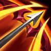
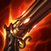

Tiradora
Dificultad Moderada
HABILIDADES


PASIVA • ¡COMIENZA A EMOCIONARTE!
Jinx recibe velocidad de movimiento y velocidad de ataque aumentadas cuando ayuda a eliminar a un campeón enemigo, un monstruo de la jungla épico o una estructura.
1 • ¡CAMBIO DE ARMAS!
Jinx modifica sus ataques básicos al alternar entre Pum-Pum, su ametralladora y Carapescado, su lanzacohetes. Los ataques con Pum-Pum otorgan velocidad de ataque, mientras que los ataques con Carapescado infligen daño de área, tienen mayor alcance y utilizan maná.
2 • ¡CHISPAS!
Jinx usa a Chispita, su pistola paralizante, para disparar un proyectil que inflige daño al primer enemigo alcanzado, lo que lo revela y ralentiza.
3 • ¡MASCAFUEGOS!
Jinx arroja una línea de granadas trampa que explotan después de 5 seg, lo que prende en llamas a los enemigos. Los Mascafuegos morderán a los campeones enemigos que caminen sobre ellos y los inmovilizarán.
DEFINITIVA • ¡¡SUPERMEGACOHETE REQUETEMORTAL!!
Jinx dispara un supercohete a través del mapa que aumenta su daño a medida que avanza. El cohete explotará al chocar con un campeón enemigo, lo que le infligirá daño a él y a los enemigos cercanos según su vida faltante.
CONFIGURACIÓN
OBJETOS
-

Filo del Infinito
3400+55 Daño de Ataque
+25% Tasa de Críticos
INFINIDAD: Los golpes críticos infligen un 230% de daño en vez de 200%.
-

Huracán de Runaan
2800+25% Tasa de Críticos
+45% Velocidad de Ataque
FURIA DEL VIENTO: Los ataques impactan a 2 enemigos cercanos adicionales, cada uno inflige un 40% de Daño de Ataque. Estos ataques pueden infligir golpes críticos y activar efectos al impacto.
-

Cañón de Fuego Rápido
2800+25% Tasa de Críticos
+35% Velocidad de Ataque
RAPIDEZ DEL CAZADOR: +5% de Velocidad de Movimiento.
ENERGIZADOS: Moverse y atacar generará un Ataque Energizado.
FRANCOTIRADOR: Los Ataques Energizados se generan un 25% más rápido, obtienen de 50 a 120 de daño mágico adicional y 150 de alcance de ataque. Los ataques cuerpo a cuerpo solo obtienen 50 de alcance. -

Recordatorio Mortal
2800+45 Daño de Ataque
ÚLTIMO SUSPIRO: +30% de Penetración de Armadura.
SEPSIS: Infligir daño físico aplica un 40% de Heridas Graves a campeones enemigos por 3 seg. Si está por debajo del 50% de Vida, este efecto aumenta a un 60% de Heridas Graves.
Heridas Graves reduce la efectividad de las curaciones y efectos regenerativos. -

Ángel Guardián
3100+40 Daño de Ataque
+40 Armadura
RESUCITAR: Tras recibir daño letal, te restaura un 50% de la Vida básica y un 30% de Maná tras 4 seg de estasis. (210 seg de enfriamiento).
-

Grebas Glotonas
1000CALZADO: +40 de Velocidad de Movimiento.
SEGUNDOS: +8% de Vampirísmo Físico.
TERCEROS: +8% de Vampirísmo Mágico.
CARRERA (ACTIVA): Aumenta la Velocidad de Movimiento un 15% durante 3 seg. Infligir o recibir daño de campeones desactiva los efectos de Carrera. (60 seg de enfriamiento). -

Encantamiento de Fajín de Mercurio
800CAPA MERCURIAL (ACTIVA): Elimina todos los efectos de control de masas que te afectan actualmente y otorga un 50% de Velocidad de Movimiento adicional durante 1.5 seg. (60 seg de enfriamiento)
No elimina los lanzamientos por el aire ni hacia atrás.
RUNAS Y HECHIZOS
-

Conquistador
Obtienes acumulaciones de fuerza adaptable al atacar a un campeón con habilidades o ataques separados. Se acumula hasta 5 veces. Al alcanzar el máximo de acumulaciones, inflige daño adaptable adicional a campeones.
POR ACUMULACIÓN: 2 - 6 de Daño de Ataque adicional o 3 - 9 de Poder de Habilidad durante 6 seg.
EFECTO ADICIONAL CON EL MÁXIMO DE ACUMULACIONES: Cuerpo a cuerpo: 10% | A distancia: 7% de daño adaptable adicional a campeones. -
Cazador: Vampirismo
Obtienes 2% de Vampirismo Físico o 2% de Vampirismo Mágico. Los derribos de campeones únicos otorgan 2 de Daño de Ataque con un 1% de Vampirismo Físico o 2 de Poder de Habilidad con un 1% de Vampirismo Mágico (adaptable).
-

Cazador: Titán
Obtienes 20 de Vida Máxima. Los derribos de campeones únicos otorgan 20 de Vida Máxima Y 4% de Tenacidad.
-

Dulces Frutos
Aumenta la curación de Frutamiel en un 25%. Cada vez que tú o un aliado cercano coma una Frutamiel, obtienes 20 de oro.
-

Barrera
ENFRIAMIENTO: 120 seg.
Obtienes un escudo que absorbe 115 de daño (115-465) durante 2 seg. -

Destello
ENFRIAMIENTO: 150 seg.
Te teletransportas una distancia corta hacia delante o hacia la dirección objetivo.
CÓMO JUGAR JINX
Jinx es un campeón del carril del dragón que se centra en el daño de ataque para matar al equipo enemigo . Jinx no es el mejor en términos de daño temprano en el juego. Cuanto más tarde va el juego y más elementos obtiene, más fuerte se vuelve. Esto se debe a su increíble alcance con sus cohetes de ¡Cambio de Armas! (primera habilidad) y su increíble velocidad de ataque con su mini-pistola a corta distancia. Ella también tiene uno de los mejores pasivos en el juego Get Excited. Cada vez que consigue un derribo, gana velocidad de ataque (superando el límite máximo de velocidad de ataque) y un montón de velocidad de movimiento para perseguir enemigos y matar a todos.